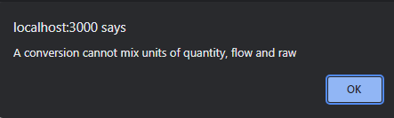
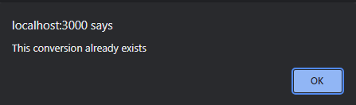

The admin conversion creating popup, shown in the following figure, allows admin users to create a new conversion on an OED site. It is accessed from the admin conversion viewing page by clicking the "Create a Conversion" button near the top of that page. Further information on conversions is available and this page assumes one understands about conversions.

All information shown on this page is based upon the help example.
As shown in the figure above, the following information can be entered:

All the available units will be shown and any one can be selected by clicking it. Note that units that are not displayable to all users are also included. This field will be outlined in red until a unit is selected as is shown in the figures. If you change the source unit after selecting the destination unit then the type and existing errors can occur as described for the destination unit.
After clicking "OK" the selected meter unit will be used and must be changed before the conversion can be saved. Also, the destination unit cannot be of a different unit type and if you select one of these an error pop up will occur as in the following figure:
After clicking "OK" the selected meter unit will be used and must be changed before the conversion can be saved. Finally, the destination unit cannot create a conversion that already exists and if you select one that causes this an error pop up will occur as in the following figure:
After clicking "OK" the selected meter unit will be used and must be changed before the conversion can be saved.
Even though OED excludes certain types of conversions, great care should be taken in creating a new conversion as they can cause undesirable behavior at the site. For example, one can create a conversion between kWh and kg because they are both quantity units. However, it probably does not make sense to convert electrical usage into mass. Thus, only desired and correct conversions should be added into OED. (Note one might create a conversion between kWh and CO2 which is a type of mass unit but is different and not a general mass unit. This is done by using a suffix unit.)
There are two buttons at the bottom of the pop up:
Saving a conversion requires a change to the OED database that necessitates a refresh of the web browser window to show the admin the updated information. As a result, all the currently selected meters/groups/language, etc. will be lost and the page shown will be the main OED graphic page. OED plans to eliminate the need for doing this in the future so one would remain on the units page.